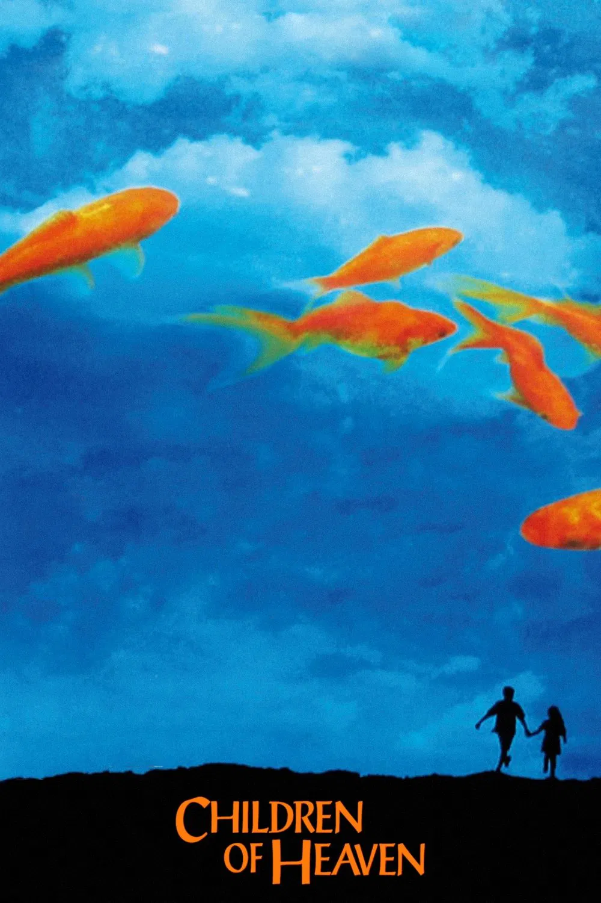
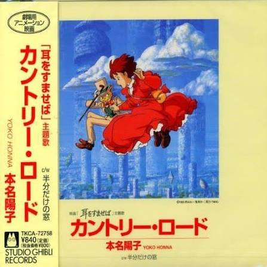
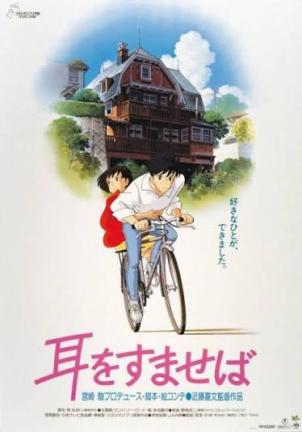

eden duan 的广播 (5)
看过
2018-11-14 21:09
导演: 奥里奥尔·保罗
主演: 马里奥·卡萨斯 / 阿娜·瓦格纳
西班牙 / 剧情 / 悬疑 / 惊悚 / 犯罪
主演: 马里奥·卡萨斯 / 阿娜·瓦格纳
西班牙 / 剧情 / 悬疑 / 惊悚 / 犯罪
看过
2018-05-11 21:15
再一次看了这部片子，仍然很喜欢。
家，到底意味着什么？是呵护吗？是牺牲吗？也许我从未真正明白过。
我只知道，一个人来到世上，便从此与另一些人的命运紧紧相连。
家，到底意味着什么？是呵护吗？是牺牲吗？也许我从未真正明白过。
我只知道，一个人来到世上，便从此与另一些人的命运紧紧相连。

导演: 马基德·马基迪
主演: 默罕默德·阿米尔·纳吉 / 阿米尔·法拉赫·哈什安
伊朗 / 剧情 / 儿童 / 家庭
主演: 默罕默德·阿米尔·纳吉 / 阿米尔·法拉赫·哈什安
伊朗 / 剧情 / 儿童 / 家庭
说：
2018-04-07 21:40
很奇怪，明明每年都记得这一天，却越来越想不起你的样子了。
前几天做梦，梦见的却是你躺在病床上的背影。
没想到吧，小时候我最怕去医院。后来你不在了，我反而不怕了。
一个人去医院，一个人面对很多事情，好像什么都可以了。
也许我真的不该总跟爸对着干。
该考虑听他的话，读个医学院，再接管家里的事。
可我想不明白，这样做，究竟又能挽回些什么呢？
我好像一直在想办法离你近一点，
却不知不觉，已经离你越来越远了。
晚安，妈妈。
生日快乐🎂
前几天做梦，梦见的却是你躺在病床上的背影。
没想到吧，小时候我最怕去医院。后来你不在了，我反而不怕了。
一个人去医院，一个人面对很多事情，好像什么都可以了。
也许我真的不该总跟爸对着干。
该考虑听他的话，读个医学院，再接管家里的事。
可我想不明白，这样做，究竟又能挽回些什么呢？
我好像一直在想办法离你近一点，
却不知不觉，已经离你越来越远了。
晚安，妈妈。
生日快乐🎂
听过
2018-03-25 22:10

表演者: John Denver / 本名阳子
流派: 乡村 / 原声带
发行时间: 1971 / 1995
流派: 乡村 / 原声带
发行时间: 1971 / 1995
看过
2018-03-25 21:30
“为了让我的名字早点出现在借书卡上，我看了好多书。”
临行去意大利前，圣司在地球屋里拉起小提琴，雯轻轻唱起《Country Road》，爷爷和其他老人也笑着投入了演奏。
这一幕，我记了好久。
明知梦想将近，人生已经走到了十字路口，可只要爱的人还在身边，连分别也值得侧耳倾听。
临行去意大利前，圣司在地球屋里拉起小提琴，雯轻轻唱起《Country Road》，爷爷和其他老人也笑着投入了演奏。
这一幕，我记了好久。
明知梦想将近，人生已经走到了十字路口，可只要爱的人还在身边，连分别也值得侧耳倾听。

侧耳倾听 耳をすませば (1995)
导演: 近藤喜文
编剧: 宫崎骏
日本 / 剧情 / 爱情 / 动画
编剧: 宫崎骏
日本 / 剧情 / 爱情 / 动画